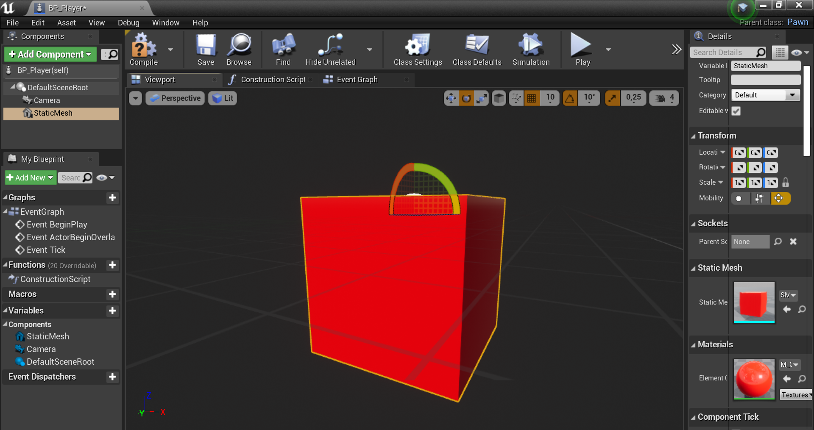
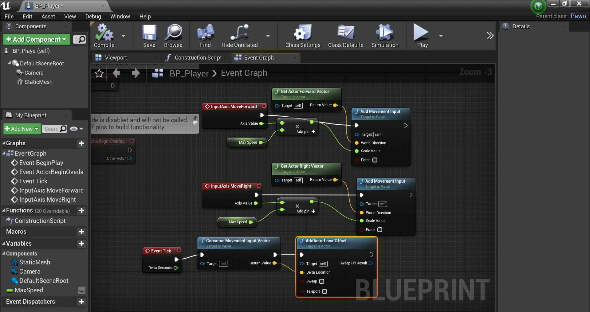
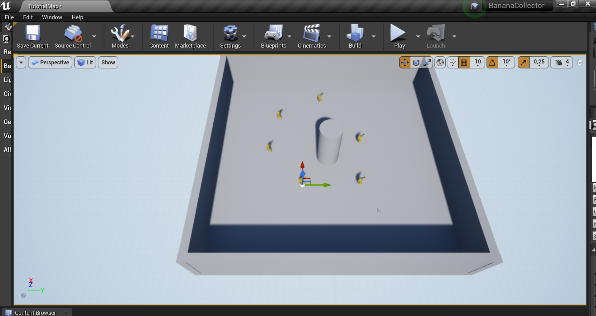

In deze workshop maak ik kennis met de Unreal Engine programma en de A-Frame web framework. De Unreal Engine is een programma waarmee je virtuele werelden kan creëren. Tijdens deze workshop leer wat basisvaardigheden van dit programma om en creëer ik ook nog een leuke omgeving met een kleine game. A-Frame is ongeveer hetzelfde. Het is een web framework voor het bouwen van virtual reality ervaringen. Deze werken met web technologieën zoals HTML en Javascript. Tijdens deze workshop worden de onderwerpen: shapes, textures en animation behandeld. De resultaten van deze workshop zie je hieronder!
Voor de eerste opdracht heb ik kennis gemaakt met de Unreal Editor. Hiervoor heb ik een bestand moeten importeren van een bananen model. Deze banaan heb ik moeten toevoegen in de viewport. Objecten, zoals de banaan kan je dus draaien, bewegen en schalen. Om de banaan een kleur te geven, heb ik een materiaal gecreëerd. Dit ging door middel van nodes en textures. Deze vormen het materiaal en geven de banaan een kleur. Om de banaan te kunnen laten ronddraaien, is er gebruik gemaakt van blueprints. Hiervoor is er een cilinder toegevoegd waar de banaan op staat. Ook bij de blueprints zijn nodes toegevoegd. Als laatst heb ik de gemaakte blueprint toegevoegd in de viewport en is het resultaat een draaiende banaan op een cilinder!
In progress...
Eindresultaat
Voor de tweede opdracht heb ik geleerd om een mini game te maken op de Unreal Editor. Hiervoor heb ik allereerst een zip bestand gedownload met de benodigde materialen erin. Vervolgens heb ik een speler gecreëerd, dat een rode kubus voorstelt. Om het spel op een echte game te laten lijken, heb ik de toetsen voor de bewegingen vastgesteld. In de blueprint zijn onder andere de variabelen, snelheid en verschillende nodes toegevoegd om de bewegingen van de speler te invoeren. Vervolgens zijn er items gecreëerd. Deze zijn de bananen die de speler kan verzamelen. Uiteindelijk is het spel gereed om gespeeld te worden! Dit kan je zien in de video.
In progress...
Eindresultaat
In deze opdracht heb ik kennis gemaakt met A-Frame. A-Frame is een web framewerk voor het bouwen van VR ervaringen. Deze opdracht bestond uit vier delen. In het eerste deel heb ik het aangeleverde zip bestand online moeten zetten op Github voor het uittesten van de opdrachten. Vervolgens heb ik kennis gemaakt met het toevoegen van vormen en hoe je ze kan positioneren. Voor het volgende deel heb ik geleerd hoe je afbeeldingen in objecten kan importeren. Deze worden textures genoemd. Als laatst heb ik gespeeld met wat animatie. Deze animaties zijn toegepast in de objecten, die nu kunnen ronddraaien!
Eindresultaat naar Github: https://mandy2612.github.io/AFrame-WS/
Shape stap 6
Animation stap 7